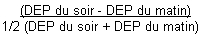

RÉSUMÉ DES CARACTÉRISTIQUES DU PRODUIT
ANSM - Mis à jour le : 15/02/2013
FLIXOTIDE DISKUS 500 microgrammes/dose, poudre pour inhalation
2. COMPOSITION QUALITATIVE ET QUANTITATIVE
Propionate de fluticasone ................................................................................................................... 500 µg
Pour une dose.
Pour la liste complète des excipients, voir rubrique 6.1.
Poudre pour inhalation
4.1. Indications thérapeutiques
Traitement continu anti-inflammatoire de l'asthme persistant*.
*L'asthme persistant se définit par l'existence de symptômes diurnes pluri-hebdomadaires et/ou de symptômes nocturnes plus de 2 fois par mois.
Remarque: cette spécialité est particulièrement adaptée aux sujets chez qui il a été mis en évidence une mauvaise synchronisation main/poumon nécessaire pour une utilisation correcte des aérosols-doseurs classiques sans chambre d'inhalation.
4.2. Posologie et mode d'administration
Posologie
La posologie est strictement individuelle. La dose initiale sera déterminée selon la sévérité de la maladie et sera ajustée en fonction des résultats individuels. Il convient de toujours rechercher la posologie minimale efficace.
Pour un patient traité par béclométasone, la dose de fluticasone à préconiser est habituellement la moitié de la dose de béclométasone utilisée.
Adulte:
Asthme persistant léger (symptômes diurnes plus de 1 fois par semaine et moins de 1 fois par jour, symptômes nocturnes plus de 2 fois par mois, DEP ou VEMS supérieur à 80 % des valeurs prédites, variabilité du DEP* comprise entre 20 et 30 %):
100 à 150 µg 2 fois par jour (matin et soir),
Asthme persistant modéré: (symptômes diurnes quotidiens, crise retentissant sur l'activité et le sommeil, symptômes d'asthme nocturne plus de 1 fois par semaine, utilisation quotidienne de bêta-2 mimétiques inhalés d'action brève, DEP ou VEMS compris entre 60 et 80 % des valeurs prédites, variabilité du DEP* supérieure à 30%):
150 à 500 µg 2 fois par jour (matin et soir),
Asthme persistant sévère: (symptômes permanents, crises fréquentes, symptômes d'asthme nocturne fréquents, activités physiques limitées par les symptômes d'asthme, DEP ou VEMS inférieur à 60 % des valeurs prédites, variabilité du DEP* supérieure à 30 %):
500 à 1000 µg 2 fois par jour (matin et soir).
*La variabilité du DEP s'évalue sur la journée:

ou sur une semaine
Enfant de plus de 4 ans:
Asthme léger à modéré: 50 à 100 µg 2 fois par jour.
Asthme sévère: 200 µg 2 fois par jour.
Le rapport efficacité/sécurité de doses quotidiennes supérieures n'a pas été étudié chez l'enfant. Il conviendra de toujours rechercher la dose minimale efficace.
Des présentations plus faiblement dosées permettent l'administration des posologies recommandées chez l'enfant.
Fréquence d'administration
La dose quotidienne est habituellement répartie en 2 prises par jour.
En cas d'asthme instable, la dose et le nombre de prises pourront être augmentés jusqu'à une administration en 3 à 4 prises par jour en fonction de l'état clinique du patient.
Chez les enfants de plus de 4 ans, lorsque l'asthme est stabilisé par une dose quotidienne de 100 µg par jour, celle-ci pourra être administrée en une prise par jour lorsque les symptômes ont régressé et que l'asthme est contrôlé. En cas de déstabilisation de l'asthme, la dose et le nombre de prises devront être réaugmentées.
Mode d'administration
Inhalation par distributeur avec embout buccal.
Pour une utilisation correcte, il est souhaitable que le médecin s'assure du bon usage de l’aapareil par le patient.
· ouvrir le Diskus. Pousser le levier jusqu'en butée,
· souffler à fond loin du Diskus pour vider les poumons,
· placer l'embout buccal du Diskus entre les lèvres,
· inspirer par la bouche aussi profondément que possible,
· retenir brièvement la respiration,
· refermer le Diskus,
· se rincer la bouche après inhalation.
Une fois les 28 ou 60 doses utilisées, il est inutile de forcer le levier: le Diskus doit être jeté.
· Hypersensibilité (allergie) au principe actif ou aux excipients (voir rubrique 2).
4.4. Mises en garde spéciales et précautions d'emploi
Mises en garde spéciales
Prévenir le patient que ce médicament n'est pas destiné à juguler une crise d'asthme déclarée, mais est un traitement continu de fond de la maladie asthmatique devant être poursuivi régulièrement, quotidiennement et aux doses prescrites, et dont les effets sur les symptômes de l'asthme ne se feront sentir qu'au bout de quelques jours à quelques semaines.
Si, en dépit d'un traitement bien conduit, une dyspnée paroxystique survient, on doit avoir recours à un bronchodilatateur bêta-2 mimétique par voie inhalée d'action rapide et de courte durée pour traiter les symptômes aigus. Il conviendra d'en informer le patient et de lui préciser qu'une consultation médicale immédiate est nécessaire si, dans ce cas, le soulagement habituellement obtenu n'est pas rapidement observé après inhalation du bronchodilatateur bêta-2 mimétique.
Si un patient développe en quelques jours une augmentation rapide de sa consommation en bronchodilatateurs bêta-2 mimétiques d'action rapide et de courte durée par voie inhalée, on doit craindre (surtout si les valeurs du débitmètre de pointe s'abaissent et/ou deviennent irrégulières) une décompensation de sa maladie et la possibilité d'une évolution vers un asthme aigu grave (état de mal asthmatique). Le médecin devra également prévenir le patient de la nécessité dans ce cas, d'une consultation immédiate. La conduite thérapeutique devra alors être réévaluée.
Le patient doit être averti que l'amélioration de son état clinique ne doit pas conduire à une modification de son traitement, en particulier à l'arrêt de la corticothérapie par voie inhalée, sans avis médical.
L'attention des sportifs sera attirée sur le fait que cette spécialité contient un principe actif pouvant induire une réaction positive des tests pratiqués lors des contrôles antidopages.
Précautions particulières d'emploi
En cas d'infection bronchique ou de bronchorrhée abondante, un traitement approprié est nécessaire afin de favoriser la diffusion optimale du produit dans les voies respiratoires.
En cas de déstabilisation de l'asthme, ou de contrôle insuffisant des exacerbations d'asthme malgré des doses maximales de corticoïdes par voie inhalée, un traitement par corticothérapie par voie générale en cure courte doit être envisagé. Il est alors nécessaire de maintenir la corticothérapie inhalée associée au traitement par voie générale.
Des effets systémiques peuvent apparaître en particulier lors de traitement au long cours avec des doses élevées de corticoïdes par voie inhalée. Le risque de retentissement systémique reste néanmoins moins important avec les corticoïdes inhalés qu’avec les corticoïdes oraux. Les effets systémiques possibles sont syndrome de Cushing ou symptômes cushingoïdes, amincissement cutané, hématomes sous cutanés, insuffisance surrénalienne, retard de croissance chez les enfants et les adolescents, diminution de la densité osseuse, cataracte, glaucome et plus rarement, troubles psychologiques et du comportement comprenant hyperactivité psychomotrice, troubles du sommeil, anxiété, dépression ou agressivité (en particulier chez l’enfant). Il convient donc de toujours veiller à rechercher la posologie minimale efficace permettant de maintenir le contrôle de l’asthme.
L'administration conjointe de corticoïdes par voie inhalée chez les asthmatiques sous corticothérapie orale au long cours (patients corticodépendants) ne dispense pas des précautions nécessaires lors d'une réduction des doses de corticoïde par voie orale. Celles-ci seront diminuées très progressivement et le sevrage devra être effectué sous surveillance médicale attentive (à la recherche de l'apparition de signes d'insuffisance surrénale aiguë ou subaiguë) se prolongeant au-delà de l'arrêt de la corticothérapie par voie générale.
4.5. Interactions avec d'autres médicaments et autres formes d'interactions
Les concentrations plasmatiques retrouvées après inhalation étant faibles, le risque d'interactions médicamenteuses entraînant un retentissement clinique est en général peu probable. Néanmoins, il conviendra de rester prudent en cas d'administration concomitante de produits inhibiteurs puissants du CYP3A4 (ex: ketoconazole, ritonavir) lors d'un traitement par propionate de fluticasone en raison du risque d'augmentation des concentrations plasmatiques de propionate de fluticasone. Toute augmentation de l'exposition systémique survenant lors de traitements associés pendant une période prolongée peut entraîner une majoration de l'effet freinateur sur l'axe corticosurrénalien. Quelques cas décrivant un retentissement clinique lié à ce type d'interaction ont été rapportés.
Chez l'animal, l'expérimentation met en évidence un effet tératogène des corticoïdes variable selon les espèces.
Dans l'espèce humaine, les études épidémiologiques n'ont décelé aucun risque malformatif lié à la prise de corticoïdes lors du premier trimestre bien qu'il existe un passage transplacentaire. Lors de maladies chroniques nécessitant un traitement tout au long de la grossesse, un léger retard de croissance intra-utérin est possible. Une insuffisance surrénalienne néonatale a été exceptionnellement observée après corticothérapie à dose élevée par voie systémique.
Il semble justifié d'observer une période de surveillance clinique (poids, diurèse) et biologique du nouveau-né.
Les corticoïdes passent dans le lait.
4.7. Effets sur l'aptitude à conduire des véhicules et à utiliser des machines
Sans objet.
Effets locaux
· Possibilité de survenue de candidose oropharyngée. Elle cède le plus souvent spontanément ou à un traitement approprié et il est exceptionnel qu'elle nécessite l'arrêt de la corticothérapie par voie inhalée. Son risque d'apparition augmente avec la dose utilisée et le nombre de prises. Il peut être prévenu par rinçage de la bouche à l'eau après inhalation.
· Possibilité de survenue de gêne pharyngée, de dysphonie, de raucité de la voie, pouvant être prévenues par rinçage de la bouche après inhalation.
· Des réactions d'hypersensibilité avec manifestations cutanées ont été signalées. De rares cas d'œdèmes facial et oropharyngé ont été rapportés.
Effets systémiques
Des effets systémiques peuvent apparaitre lors de traitement au long cours avec des doses élevées (voir rubrique 4.4).Ont été décrites avec la corticothérapie par voie inhalée des observations d'amincissement cutané, d'hématomes sous-cutanés, de dépression des fonctions surrénaliennes biologiques (diminution du cortisol plasmatique et de la cortisolurie des 24 heures), de raréfaction du tissu osseux, de ralentissement de la croissance, de cataracte et de glaucome.
L'administration de fortes doses au long cours peut donc nécessiter une surveillance en particulier chez les enfants et les sujets âgés.
-Cataracte et glaucome.
-Troubles psychiatriques : anxiété, trouble du sommeil, modification du comportement incluant hyperactivité psychomoteur et irritabilité (principalement observés chez l’enfant).
-Fréquence indéterminée : dépression et agressivité (principalement chez l’enfant).
La recherche de la posologie minimale efficace doit être toujours recommandée en considérant le risque d'un contrôle insuffisant de l'asthme qui devra être pesé face à celui du retentissement systémique.
L'emploi de ce médicament à des doses très supérieures aux doses recommandées est le reflet d'une aggravation de l'affection respiratoire nécessitant une consultation rapide pour réévaluation thérapeutique.
5. PROPRIETES PHARMACOLOGIQUES
5.1. Propriétés pharmacodynamiques
GLUCOCORTICOIDES PAR VOIE INHALEE.
ANTIASTHMATIQUE.
Code ATC: R03BA05.
Le propionate de fluticasone en inhalation exerce une action anti-inflammatoire marquée sur la muqueuse bronchique.
Chez l'adulte, l'effet freinateur du propionate de fluticasone sur l'axe hypophysosurrénalien ne se manifeste qu'à une posologie supérieure à 1500 µg par 24 heures.
5.2. Propriétés pharmacocinétiques
Après inhalation une partie de la dose est déglutie, l'autre partie pénètre dans les bronches où elle exerce ses effets. Lors d'une utilisation correcte de l'appareil, la biodisponibilité systémique absolue est de 12 à 26 % provenant presque exclusivement de la résorption pulmonaire. Sa biodisponibilité orale est quasi nulle.
Après administration orale de fluticasone, 87 à 100 % de la dose est excrétée dans les fèces dont une partie sous forme inchangée (de 20 % pour une dose de 1 mg, jusqu'à 75 % pour une dose de 16 mg).
Il existe un important effet de premier passage hépatique. 98% de la dose administrée par voie IV est éliminée en 3 à 4 heures et la demi-vie terminale d'élimination plasmatique est d'environ 8 heures.
Le volume de distribution est voisin de 300 litres.
La liaison aux protéines plasmatiques est de 91 %. Le propionate de fluticasone est principalement métabolisé par le cytochrome P450 isoenzyme CYP3A4 sous forme de métabolites sans effet corticoïde.
5.3. Données de sécurité préclinique
Sans objet.
Lactose monohydraté (contenant des protéines de lait)
Sans objet.
3 ans.
6.4. Précautions particulières de conservation
Conserver à une température inférieure à 30°C.
6.5. Nature et contenu de l'emballage extérieur
28 doses en plaquettes thermoformées (PVC/Aluminium) en distributeur (Diskus).
60 doses en plaquettes thermoformées (PVC/Aluminium) en distributeur (Diskus).
6.6. Précautions particulières d’élimination et de manipulation
Pas d'exigences particulières.
7. TITULAIRE DE L’AUTORISATION DE MISE SUR LE MARCHE
Laboratoire GLAXOSMITHKLINE
100, route de Versailles
78163 Marly-le-Roi Cedex
8. NUMERO(S) D’AUTORISATION DE MISE SUR LE MARCHE
· 339 334-2: 28 doses en plaquettes thermoformées (PVC/Aluminium) en distributeur (Diskus).
· 339 363-2: 60 doses en plaquettes thermoformées (PVC/Aluminium) en distributeur (Diskus).
9. DATE DE PREMIERE AUTORISATION/DE RENOUVELLEMENT DE L’AUTORISATION
[à compléter par le titulaire]
10. DATE DE MISE A JOUR DU TEXTE
[à compléter par le titulaire]
Sans objet.
12. INSTRUCTIONS POUR LA PREPARATION DES RADIOPHARMACEUTIQUES
Sans objet.
Liste I.